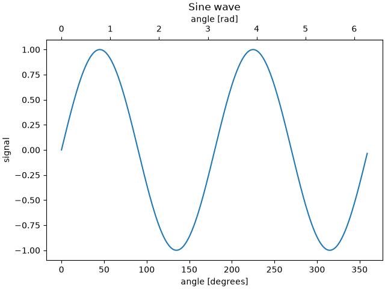
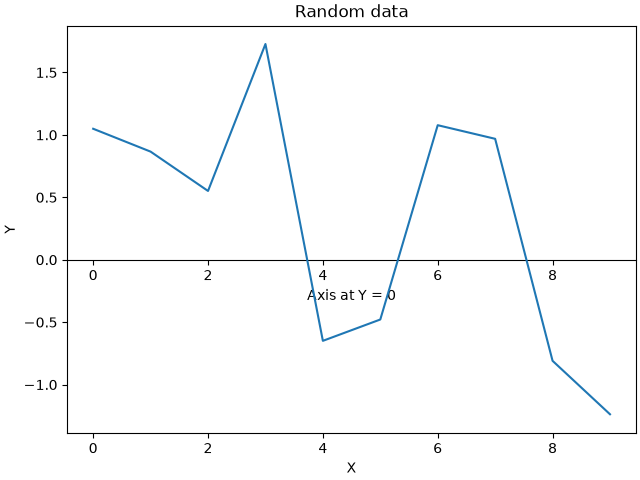
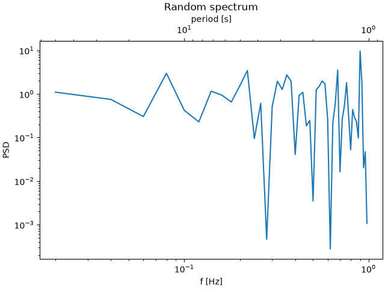
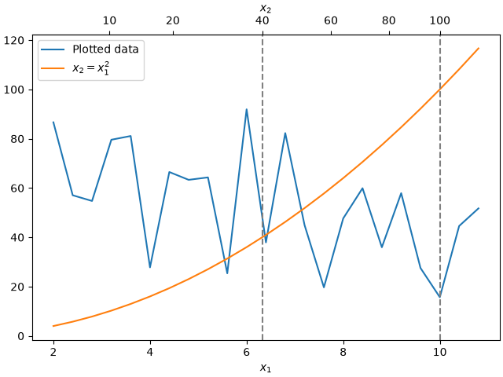
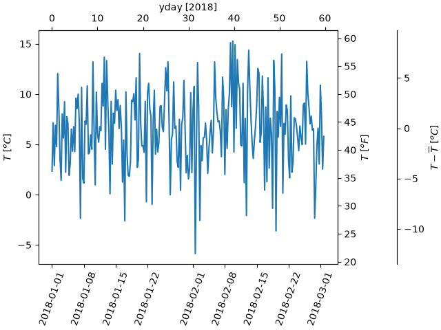

Note
Go to the end to download the full example code.
Secondary Axis#
Sometimes we want a secondary axis on a plot, for instance to convert
radians to degrees on the same plot. We can do this by making a child
axes with only one axis visible via axes.Axes.secondary_xaxis and
axes.Axes.secondary_yaxis. This secondary axis can have a different scale
than the main axis by providing both a forward and an inverse conversion
function in a tuple to the functions keyword argument:
See also Plots with different scales for the case where two scales are not related to one another, but independent.
import datetime
import matplotlib.pyplot as plt
import numpy as np
import matplotlib.dates as mdates
fig, ax = plt.subplots(layout='constrained')
x = np.arange(0, 360, 1)
y = np.sin(2 * x * np.pi / 180)
ax.plot(x, y)
ax.set_xlabel('angle [degrees]')
ax.set_ylabel('signal')
ax.set_title('Sine wave')
def deg2rad(x):
return x * np.pi / 180
def rad2deg(x):
return x * 180 / np.pi
secax = ax.secondary_xaxis('top', functions=(deg2rad, rad2deg))
secax.set_xlabel('angle [rad]')
plt.show()

By default, the secondary axis is drawn in the Axes coordinate space. We can also provide a custom transform to place it in a different coordinate space. Here we put the axis at Y = 0 in data coordinates.
fig, ax = plt.subplots(layout='constrained')
x = np.arange(0, 10)
np.random.seed(19680801)
y = np.random.randn(len(x))
ax.plot(x, y)
ax.set_xlabel('X')
ax.set_ylabel('Y')
ax.set_title('Random data')
# Pass ax.transData as a transform to place the axis relative to our data
secax = ax.secondary_xaxis(0, transform=ax.transData)
secax.set_xlabel('Axis at Y = 0')
plt.show()

Here is the case of converting from wavenumber to wavelength in a log-log scale.
Note
In this case, the xscale of the parent is logarithmic, so the child is made logarithmic as well.
fig, ax = plt.subplots(layout='constrained')
x = np.arange(0.02, 1, 0.02)
np.random.seed(19680801)
y = np.random.randn(len(x)) ** 2
ax.loglog(x, y)
ax.set_xlabel('f [Hz]')
ax.set_ylabel('PSD')
ax.set_title('Random spectrum')
def one_over(x):
"""Vectorized 1/x, treating x==0 manually"""
x = np.array(x, float)
near_zero = np.isclose(x, 0)
x[near_zero] = np.inf
x[~near_zero] = 1 / x[~near_zero]
return x
# the function "1/x" is its own inverse
inverse = one_over
secax = ax.secondary_xaxis('top', functions=(one_over, inverse))
secax.set_xlabel('period [s]')
plt.show()

Sometime we want to relate the axes in a transform that is ad-hoc from the data, and is derived empirically. Or, one axis could be a complicated nonlinear function of the other. In these cases we can set the forward and inverse transform functions to be linear interpolations from the one set of independent variables to the other.
Note
In order to properly handle the data margins, the mapping functions
(forward and inverse in this example) need to be defined beyond the
nominal plot limits. This condition can be enforced by extending the
interpolation beyond the plotted values, both to the left and the right,
see x1n and x2n below.
fig, ax = plt.subplots(layout='constrained')
x1_vals = np.arange(2, 11, 0.4)
# second independent variable is a nonlinear function of the other.
x2_vals = x1_vals ** 2
ydata = 50.0 + 20 * np.random.randn(len(x1_vals))
ax.plot(x1_vals, ydata, label='Plotted data')
ax.plot(x1_vals, x2_vals, label=r'$x_2 = x_1^2$')
ax.set_xlabel(r'$x_1$')
ax.legend()
# the forward and inverse functions must be defined on the complete visible axis range
x1n = np.linspace(0, 20, 201)
x2n = x1n**2
def forward(x):
return np.interp(x, x1n, x2n)
def inverse(x):
return np.interp(x, x2n, x1n)
# use axvline to prove that the derived secondary axis is correctly plotted
ax.axvline(np.sqrt(40), color="grey", ls="--")
ax.axvline(10, color="grey", ls="--")
secax = ax.secondary_xaxis('top', functions=(forward, inverse))
secax.set_xticks([10, 20, 40, 60, 80, 100])
secax.set_xlabel(r'$x_2$')
plt.show()

A final example translates np.datetime64 to yearday on the x axis and from Celsius to Fahrenheit on the y axis. Note the addition of a third y axis, and that it can be placed using a float for the location argument
dates = [datetime.datetime(2018, 1, 1) + datetime.timedelta(hours=k * 6)
for k in range(240)]
temperature = np.random.randn(len(dates)) * 4 + 6.7
fig, ax = plt.subplots(layout='constrained')
ax.plot(dates, temperature)
ax.set_ylabel(r'$T\ [^oC]$')
ax.xaxis.set_tick_params(rotation=70)
def date2yday(x):
"""Convert matplotlib datenum to days since 2018-01-01."""
y = x - mdates.date2num(datetime.datetime(2018, 1, 1))
return y
def yday2date(x):
"""Return a matplotlib datenum for *x* days after 2018-01-01."""
y = x + mdates.date2num(datetime.datetime(2018, 1, 1))
return y
secax_x = ax.secondary_xaxis('top', functions=(date2yday, yday2date))
secax_x.set_xlabel('yday [2018]')
def celsius_to_fahrenheit(x):
return x * 1.8 + 32
def fahrenheit_to_celsius(x):
return (x - 32) / 1.8
secax_y = ax.secondary_yaxis(
'right', functions=(celsius_to_fahrenheit, fahrenheit_to_celsius))
secax_y.set_ylabel(r'$T\ [^oF]$')
def celsius_to_anomaly(x):
return (x - np.mean(temperature))
def anomaly_to_celsius(x):
return (x + np.mean(temperature))
# use of a float for the position:
secax_y2 = ax.secondary_yaxis(
1.2, functions=(celsius_to_anomaly, anomaly_to_celsius))
secax_y2.set_ylabel(r'$T - \overline{T}\ [^oC]$')
plt.show()

References
The use of the following functions, methods, classes and modules is shown in this example:
Total running time of the script: (0 minutes 2.339 seconds)